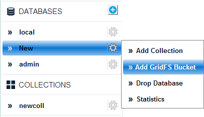

GridFS > Add
- Click Add GridFS Bucket. See Figure below.

- Enter the Bucket Name field. See Figure below.
- Click Submit

- The new bucket name is added.
GridFS > Delete
- Hover on the desired GridFS Bucket name
- Click Drop Bucket from the drop-down menu. See figure below.

A confirmation box displays as shown in the figure below.

- Click Yes on the confirmation alert.
The bucket along with all its
files will then be dropped.
GridFS > View database statistics
- Hover on the GridFS Bucket name
- Click Statistics from the drop-down menu.
The statistics for the required GridFS Bucket displays.
previousnext